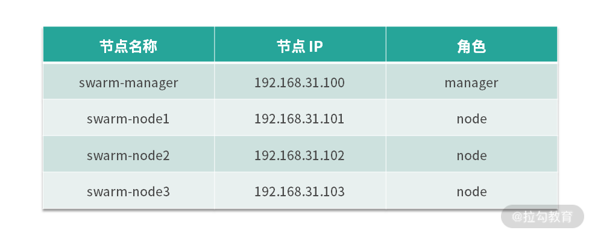

- 00 溯本求源，吃透 Docker！.md
- 01 Docker 安装：入门案例带你了解容器技术原理.md
- 02 核心概念：镜像、容器、仓库，彻底掌握 Docker 架构核心设计理念.md
- 03 镜像使用：Docker 环境下如何配置你的镜像？.md
- 04 容器操作：得心应手掌握 Docker 容器基本操作.md
- 05 仓库访问：怎样搭建属于你的私有仓库？.md
- 06 最佳实践：如何在生产中编写最优 Dockerfile？.md
- 07 Docker 安全：基于内核的弱隔离系统如何保障安全性？.md
- 08 容器监控：容器监控原理及 cAdvisor 的安装与使用.md
- 09 资源隔离：为什么构建容器需要 Namespace ？.md
- 10 资源限制：如何通过 Cgroups 机制实现资源限制？.md
- 11 组件组成：剖析 Docker 组件作用及其底层工作原理.md
- 12 网络模型：剖析 Docker 网络实现及 Libnetwork 底层原理.md
- 13 数据存储：剖析 Docker 卷与持久化数据存储的底层原理.md
- 14 文件存储驱动：AUFS 文件系统原理及生产环境的最佳配置.md
- 15 文件存储驱动：Devicemapper 文件系统原理及生产环境的最佳配置.md
- 16 文件存储驱动：OverlayFS 文件系统原理及生产环境的最佳配置.md
- 17 原理实践：自己动手使用 Golang 开发 Docker（上）.md
- 18 原理实践：自己动手使用 Golang 开发 Docker（下）.md
- 19 如何使用 Docker Compose 解决开发环境的依赖？.md
- 20 如何在生产环境中使用 Docker Swarm 调度容器？.md
- 21 如何使 Docker 和 Kubernetes 结合发挥容器的最大价值？.md
- 22 多阶级构建：Docker 下如何实现镜像多阶级构建？.md
- 23 DevOps：容器化后如何通过 DevOps 提高协作效能？.md
- 24 CICD：容器化后如何实现持续集成与交付？（上）.md
- 25 CICD：容器化后如何实现持续集成与交付？（下）.md
- 26 结束语 展望未来：Docker 的称霸之路.md
20 如何在生产环境中使用 Docker Swarm 调度容器？
上一课时，我介绍了 Docker 的单节点引擎工具 Docker Compose，它能够在单一节点上管理和编排多个容器，当我们的服务和容器数量较小时可以使用 Docker Compose 来管理容器。
然而随着我们的业务规模越来越大，我们的容器规模也逐渐增大时，数量庞大的容器管理将给我们带来许多挑战。Docker 官方为了解决多容器管理的问题推出了 Docker Swarm ，我们可以用它来管理规模更大的容器集群。
Swarm 的前生今世
2014 年 Docker 在容器界越来越火，这时容器的编排工具 Mesos 和 Kubernetes 也开始崭露头角。此时，Docker 公司也开始筹划容器的编排和集群管理工具，推出了自己的通信协议项目 Beam。后来，通过改进 Beam，Beam 成为一个允许使用 Docker API 来控制的一种分布式系统，之后项目被重命名为 libswarm。然而在 2014 年 11 月，Docker 公司又对 libswarm 进行了重新设计，支持了远程调用 API，并且被重新命名为 Swarm。到此我们称之为 Swarm V1。
在 2016 年，为了解决中央服务可扩展性的问题，Docker 团队重新设计了 Swarm，并称之为 Swarm V2。此时的 Docker Swarm 已经可以支持超过 1000 多个节点的集群规模，并且 Docker 团队在发布 Docker 1.12 版本时，将 Docker Swarm 默认集成到了 Docker 引擎中。
由于 Swarm 是 Docker 官方推出的容器集群管理工具，因此 Swarm 最大的优势之一就是原生支持 Docker API，给用户带来了极大的便利，原来的 Docker 用户可以很方便地将服务迁移到 Swarm 中来。
与此同时，Swarm 还内置了对 Docker 网络插件的支持，因此用户可以很方便地部署需要跨主机通信的容器集群。其实 Swarm 的优点远远不止这些，还有很多，例如以下优点。
- 分布式： Swarm 使用Raft（一种分布式一致性协议）协议来做集群间数据一致性保障，使用多个容器节点组成管理集群，从而避免单点故障。
- 安全： Swarm 使用 TLS 双向认证来确保节点之间通信的安全，它可以利用双向 TLS 进行节点之间的身份认证，角色授权和加密传输，并且可以自动执行证书的颁发和更换。
- 简单： Swarm 的操作非常简单，并且除 Docker 外基本无其他外部依赖，而且从 Docker 1.12 版本后， Swarm 直接被内置到了 Docker 中，可以说真正做到了开箱即用。
Swarm 的这些优点得益于它优美的架构设计，下面我们来了解一下 Swarm 的架构。
Swarm 的架构
Swarm 的架构整体分为管理节点（Manager Nodes）和工作节点（Worker Nodes），整体架构如下图：

图 1 Swarm 架构图
管理节点： 管理节点负责接受用户的请求，用户的请求中包含用户定义的容器运行状态描述，然后 Swarm 负责调度和管理容器，并且努力达到用户所期望的状态。
工作节点： 工作节点运行执行器（Executor）负责执行具体的容器管理任务（Task），例如容器的启动、停止、删除等操作。
管理节点和工作节点的角色并不是一成不变的，你可以手动将工作节点转换为管理节点，也可以将管理节点转换为工作节点。
Swarm 核心概念
在真正使用 Swarm 之前，我们需要了解几个 Swarm 的核心概念，这些核心概念可以帮助我们更好地学习和理解 Swarm 的设计理念。
Swarm 集群
Swarm 集群是一组被 Swarm 统一管理和调度的节点，被 Swarm纳管的节点可以是物理机或者虚拟机。其中一部分节点作为管理节点，负责集群状态的管理和协调，另一部分作为工作节点，负责执行具体的任务来管理容器，实现用户服务的启停等功能。
节点
Swarm 集群中的每一台物理机或者虚拟机称为节点。节点按照工作职责分为管理节点和工作节点，管理节点由于需要使用 Raft 协议来协商节点状态，生产环境中通常建议将管理节点的数量设置为奇数个，一般为 3 个、5 个或 7 个。
服务
服务是为了支持容器编排所提出的概念，它是一系列复杂容器环境互相协作的统称。一个服务的声明通常包含容器的启动方式、启动的副本数、环境变量、存储、配置、网络等一系列配置，用户通过声明一个服务，将它交给 Swarm，Swarm 负责将用户声明的服务实现。
服务分为全局服务（global services）和副本服务（replicated services）。
- 全局服务：每个工作节点上都会运行一个任务，类似于 Kubernetes 中的 Daemonset。
- 副本服务：按照指定的副本数在整个集群中调度运行。
任务
任务是集群中的最小调度单位，它包含一个真正运行中的 Docker 容器。当管理节点根据服务中声明的副本数将任务调度到节点时，任务则开始在该节点启动和运行，当节点出现异常时，任务会运行失败。此时调度器会把失败的任务重新调度到其他正常的节点上正常运行，以确保运行中的容器副本数满足用户所期望的副本数。
服务外部访问
由于容器的 IP 只能在集群内部访问到，而且容器又是用后马上销毁，这样容器的 IP 也会动态变化，因此容器集群内部的服务想要被集群外部的用户访问到，服务必须要映射到主机上的固定端口。Swarm 使用入口负载均衡（ingress load balancing）的模式将服务暴露在主机上，该模式下，每一个服务会被分配一个公开端口（PublishedPort），你可以指定使用某个未被占用的公开端口，也可以让 Swarm 自动分配一个。
Swarm 集群的公开端口可以从集群内的任意节点上访问到，当请求达到集群中的一个节点时，如果该节点没有要请求的服务，则会将请求转发到实际运行该服务的节点上，从而响应用户的请求。公有云的云负载均衡器（cloud load balancers）可以利用这一特性将流量导入到集群中的一个或多个节点，从而实现利用公有云的云负载均衡器将流量导入到集群中的服务。
搭建 Swarm 集群
要想使用 Swarm 集群有如下一些要求：
- Docker 版本大于 1.12，推荐使用最新稳定版 Docker；
- 主机需要开放一些端口（TCP：2377 UDP:4789 TCP 和 UDP:7946）。
下面我通过四台机器来搭建一个 Swarm 集群，演示的节点规划如下：

生产环境中推荐使用至少三个 manager 作为管理节点。
- 第一步：初始化集群
Docker 1.12 版本后， Swarm 已经默认集成到了 Docker 中，因此我们可以直接使用 Docker 命令来初始化 Swarm，集群初始化的命令格式如下：
docker swarm init --advertise-addr <YOUR-IP>
advertise-addr 一般用于主机有多块网卡的情况，如果你的主机只有一块网卡，可以忽略此参数。
在管理节点上，通过以下命令初始化集群：
$ docker swarm init
Swarm initialized: current node (1ehtnlcf3emncktgjzpoux5ga) is now a manager.
To add a worker to this swarm, run the following command:
docker swarm join --token SWMTKN-1-1kal5b1iozbfmnnhx3kjfd3y6yqcjjjpcftrlg69pm2g8hw5vx-8j4l0t2is9ok9jwwc3tovtxbp 192.168.31.100:2377
To add a manager to this swarm, run 'docker swarm join-token manager' and follow the instructions.
集群初始化后， Swarm 会提示我们当前节点已经作为一个管理节点了，并且提示了如何把一台主机加入集群成为工作节点。
- 第二步：加入工作节点
按照第一步集群初始化后输出的提示，只需要复制其中的命令即可，然后在剩余的三台工作节点上分别执行如下命令：
$ docker swarm join --token SWMTKN-1-1kal5b1iozbfmnnhx3kjfd3y6yqcjjjpcftrlg69pm2g8hw5vx-8j4l0t2is9ok9jwwc3tovtxbp 192.168.31.100:2377
This node joined a swarm as a worker.
默认加入的节点为工作节点，如果是生产环境，我们可以使用docker swarm join-token manager命令来查看如何加入管理节点：
$ docker swarm join-to ken manager
To add a manager to this swarm, run the following command:
docker swarm join --token SWMTKN-1-1kal5b1iozbfmnnhx3kjfd3y6yqcjjjpcftrlg69pm2g8hw5vx-8fq89jxo2axwggryvom5a337t 192.168.31.100:2377
复制 Swarm 输出的结果即可加入管理节点到集群中。
注意：管理节点的数量必须为奇数，生产环境推荐使用3个、5个或7个管理节点来管理 Swarm 集群。
- 第三步：节点查看
节点添加完成后，我们使用以下命令可以查看当前节点的状态：
$ ]# docker node ls
ID HOSTNAME STATUS AVAILABILITY MANAGER STATUS ENGINE VERSION
1ehtnlcf3emncktgjzpoux5ga * swarm-manager Ready Active Leader 19.03.12
pn7gdm847sfzydqhcv3vma97y * swarm-node1 Ready Active 19.03.12
4dtc9pw5quyjs5yf25ccgr8uh * swarm-node2 Ready Active 19.03.12
est7ww3gngna4u7td22g9m2k5 * swarm-node3 Ready Active 19.03.12
到此，一个包含 1 个管理节点，3 个工作节点的 Swarm 集群已经搭建完成。
使用 Swarm
集群搭建完成后，我们就可以在 Swarm 集群中创建服务了，Swarm 集群中常用的服务部署方式有以下两种。
（1）通过 docker service 命令创建服务
使用docker service create命令可以创建服务，创建服务的命令如下：
$ docker service create --replicas 1 --name hello-world nginx
24f9ng83m9sq4ml3e92k4g5by
overall progress: 1 out of 1 tasks
1/1: running [==================================================>]
verify: Service converged
此时我们已经创建好了一个服务，使用docker service ls命令可以查看已经启动的服务：
$ docker service ls
ID NAME MODE REPLICAS IMAGE PORTS
24f9ng83m9sq hello-world replicated 1/1 nginx:latest
当我们不再需要这个服务了，可以使用docker service rm命令来删除服务：
$ docker service rm hello-world
hello-world
此时 hello-world 这个服务已经成功地从集群中删除。
想要了解更多的docker service命令的相关操作，可以参考这里。
生产环境中，我们推荐使用 docker-compose 模板文件来部署服务，这样服务的管理会更加方便并且可追踪，而且可以同时创建和管理多个服务，更加适合生产环境中依赖关系较复杂的部署模式。
（2）通过 docker stack 命令创建服务
我们在 19 课时中创建了 docker-compose 的模板文件，成功的使用该模板文件创建并启动了 MySQL 服务和 WordPress 两个服务。这里我们将 19 讲中的 docker-compose 模板文件略微改造一下：
version: '3'
services:
mysql:
image: mysql:5.7
volumes:
- mysql_data:/var/lib/mysql
restart: always
environment:
MYSQL_ROOT_PASSWORD: root
MYSQL_DATABASE: mywordpress
MYSQL_USER: mywordpress
MYSQL_PASSWORD: mywordpress
wordpress:
depends_on:
- mysql
image: wordpress:php7.4
deploy:
mode: replicated
replicas: 2
ports:
- "8080:80"
restart: always
environment:
WORDPRESS_DB_HOST: mysql:3306
WORDPRESS_DB_USER: mywordpress
WORDPRESS_DB_PASSWORD: mywordpress
WORDPRESS_DB_NAME: mywordpress
volumes:
mysql_data: {}
我在服务模板文件中添加了 deploy 指令，并且指定使用副本服务（replicated）的方式启动两个 WordPress 实例。
准备好启动 WordPress 服务的配置后，我们在 /tmp 目下新建 docker-compose.yml 文件，并且写入以上的内容，然后我们使用以下命令启动服务：
$ docker stack deploy -c docker-compose.yml wordpress
Ignoring unsupported options: restart
Creating network wordpress_default
Creating service wordpress_mysql
Creating service wordpress_wordpress
执行完以上命令后，我们成功启动了两个服务：
- MySQL 服务，默认启动了一个副本。
- WordPress 服务，根据我们 docker-compose 模板的定义启动了两个副本。
下面我们用docker service ls命令查看一下当前启动的服务。
$ docker service ls
ID NAME MODE REPLICAS IMAGE PORTS
v8i0pzb4e3tc wordpress_mysql replicated 1/1 mysql:5.7
96m8xfyeqzr5 wordpress_wordpress replicated 2/2 wordpress:php7.4 *:8080->80/tcp
可以看到，Swarm 已经为我们成功启动了一个 MySQL 服务，并且启动了两个 WordPress 实例。WordPress 实例通过 8080 端口暴露在了主机上，我们通过访问集群中的任意节点的 IP 加 8080 端口即可访问到 WordPress 服务。例如，我们访问http://192.168.31.101:8080即可成功访问到我们搭建的 WordPress 服务。
结语
Docker Swarm 是一个用来定义复杂应用的集群编排工具，可以帮我们把多台主机组成一个 Swarm 集群，并且帮助我们管理和调度复杂的容器服务。由于 Swarm 已经被内置于 Docker 中，因此 Swarm 的安装和使用也变得非常简单，只要你有 Docker 的使用经验，就可以很快地将你的应用迁移到 Swarm 集群中。
那么，学完本课时内容，你可以试着构建一个高可用（管理节点扩展为 3 个或 5 个）的 Swarm 集群吗？
下一课时，我将为你讲解目前使用最多的容器编排系统Kubernetes，再会。